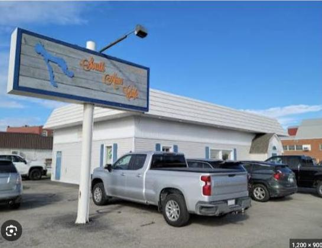
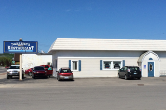
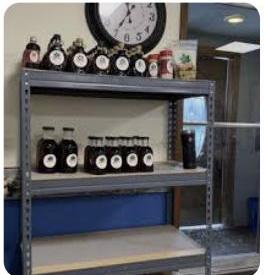
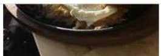

A little cafe with a lot of history, on the corner where this town has been eating breakfast for decades.

Long before it was South Arm Cafe, this corner of East Jordan was a gathering spot known as Darlene’s — and before that, folks called it The Cow. For decades it was where the town caught up over coffee: farmers early, families late, and everyone in between.
When we took over and reopened as South Arm Cafe, we didn’t reinvent the place. We kept what mattered most: the recipes, the bread baked from scratch every morning, and the friendly welcome that made this a town institution in the first place.
The name comes from the water. We sit at the top of the South Arm of Lake Charlevoix — the same lake shape that’s hand painted, in navy, right on our sign out front.


The cinnamon roll and cinnamon bread recipe predates all of us. Regulars still describe it by the name of the woman who used to bake it — and that’s about the highest compliment a kitchen can get. We make it the same way, every morning, and we don’t plan on changing it.

“Cinnamon buns like Maxine used to make.”
Come hungry, leave happy.